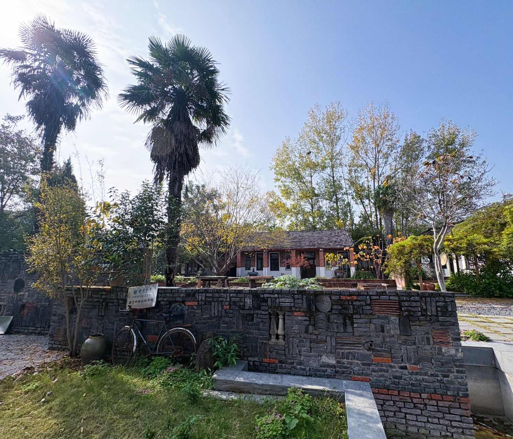
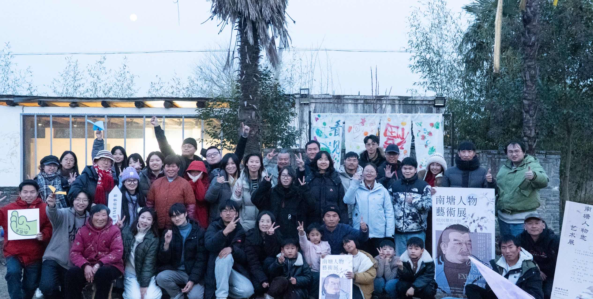
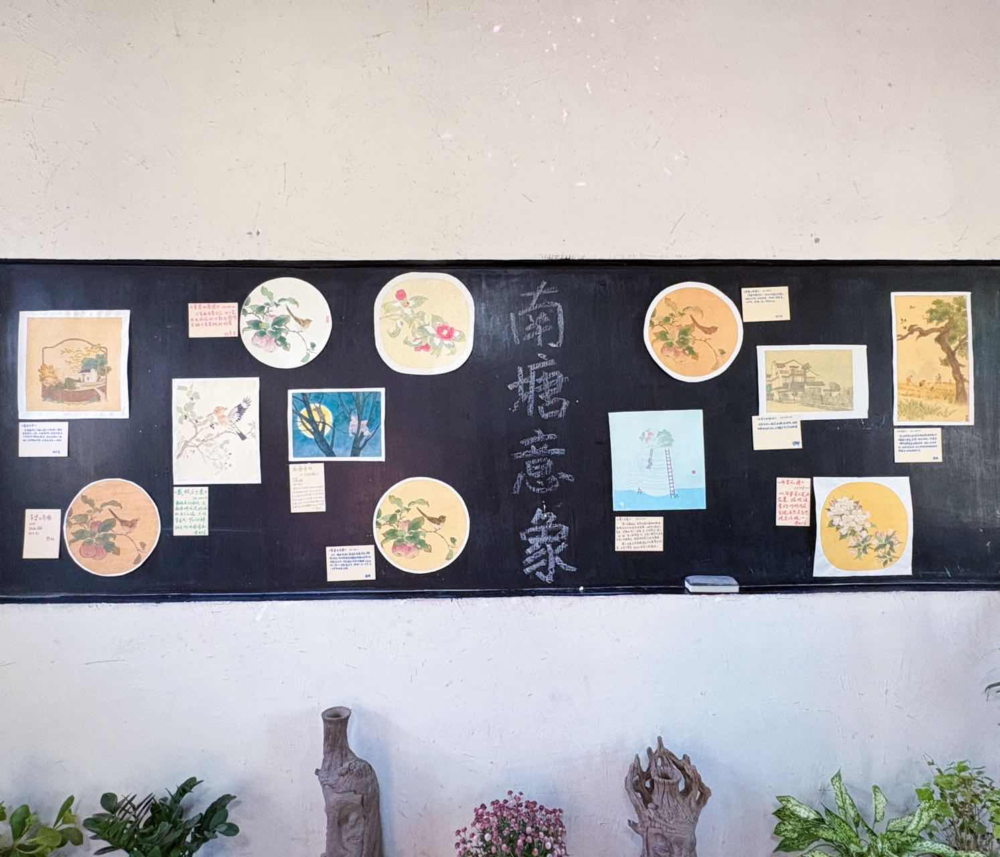

实地案例 · 南塘
Semi 与 Bai 实地应用实例：
南塘与南塘艺术共创营
一个会自己商量事的村子 · 第三期真实压力测试
当乡村二十多年的协作传统，遇上区块链与线上协作工具，会发生什么？南塘艺术共创营第三期给出了一个可参照的答案：20 人 × 17 天，任务发布、领取、验收、积分发放全流程线上化。
一个会自己商量事的村子

安徽阜阳的南塘村，是一个有“自己商量事”传统的村子。1998年前后，村民们为了共同面对的难题自发组织起来，2003年老年协会和妇女文艺队相继成立，2004年大家在此基础上成立了南塘兴农合作社。从那时到现在，这里的人们在乡村协作上已经走了二十多年。南塘还有一套很有名的“萝卜白菜规则”，它来自美国的《罗伯特议事规则》，2008年由议事规则推广者袁天鹏和合作社一起精简成村民记得住的“南塘十三条”。村里的老人念不准“罗伯特”，就笑着叫它“萝卜白菜”，名字就这样传开了。这套规则说的都是大白话：主持人只管流程不发表意见，讨论的必须是具体能落地的提议，发言先举手每人每次不超过两分钟，不许跑题不许人身攻击，赞成的人比反对的人多才算通过。村民们靠这套规则，学会了一件看似简单其实很难的事：好好开会。在数字技术来到这里之前，民主和协作的种子早就埋在了这片泥土里。
从乡建小伙伴的工具说起
2024年，一群关心公共事务、熟悉区块链的年轻人来到村里，和村民一起生活、一起做事，这一年8月南塘DAO正式成立。此后返乡青年、实习生、数字游民和远程参与的伙伴陆续加入，成了今天在南塘做事的主力。开发者社区与南塘的相遇，也是在这个过程里自然发生的。我们最初只是想给乡建的小伙伴做一个趁手的工具——一个能记录贡献、能发任务、能让每一份付出都被看见的东西。于是有了 Semi，一个用手机号或邮箱就能登录的数字身份；也有了 Bai，一个把任务发布、领取、验收、积分发放全流程搬到线上的社区协作助手。Semi 管“你是谁”，Bai 管“你为社区做了什么”，两者合在一起，就是一套完整的社区协作基础设施。
共创营中的实地应用

南塘艺术共创营前两期已经初步验证了“艺术+社区+积分”这件事是能跑通的，但也留下了一个没解决的问题：积分系统始终停留在手动操作阶段，任务发布靠喊，领取靠接龙，NT发放靠人记在本子上，营期一结束账本一合，谁做了什么拿了多少全靠几个人的记忆撑着。第三期的最大不同，就是 NT 任务系统第一次在网页平台上正式运行，任务发布、领取、验收、NT发放全流程线上化。这不是一次概念演示，而是一场20人×17天的真实压力测试。来的共创人每个人都有一个 Semi 数字身份，用手机号或邮箱注册，不需要懂区块链，不需要记密码，甚至不需要知道“链”是什么东西，登录 Bai 就能看到今天有什么任务可以领，做完上传凭证，审核通过积分就到账了。大家的反应都很积极，很快便熟悉了使用，并提出了很多具有建设性的迭代建议。我们也吸取建议做了相应的升级。
555条任务记录，24,293 NT流转

17天下来，系统跑出了555条任务记录，24,293 NT流转，20天内无重大故障。这些数字背后是一整套协作流程的完整跑通：共创人用 Semi 登录进入 Bai，在任务广场按标签、截止时间、积分排序找任务，一键领取；任务沿“未领取→已领取→待提交→审核中→已完成”流转，被驳回还能重新提交，全过程留在任务时间线上；任务完成即发放 NT 至 Semi 账户，共创人再用 NT 兑换食宿，40 NT一天，形成“劳动→NT→食宿支付→合作社回收”的闭环。合作社在这个过程中清晰认识到了 NT 流通次数的价值——NT每多流通一次，就是一次真实协作的发生，这句话后来被写进了结项报告，它不是一句口号，而是从17天真实运转里自己长出来的认知。
那些超出预期的时刻
超出预期的事情发生了不止一件。营期里在地伙伴和共创人自发发布了17+项任务，任务系统不再只是主办方用来管理营队的工具，而是被社区成员主动用作了日常协作的基础设施，去中心化任务发布的价值得到了真实验证。画展延期决策走完了“个人想法→集体动议→辩论→投票通过”的完整过程，议事规则解决“怎么商量”，Bai 解决“谁做了什么、发了多少积分”，两者在真实协作中形成了互补。还有一次，10位共创人因创作进度滞后集体申请延期3天，并以支付工作人员延时 NT 1,250 为前置条件获得通过，NT 不再只是“主办方发、共创人领”的单向激励，它在协商场景中反向流动，成了真实需求的表达和置换通道。素社之晨的站桩、行禅、抄经参与率达到了89%，静心时刻参与率80%，这些数据后来都成了系统迭代的重要输入。
系统在实战中迭代
共创营向开发者社区提交了 Bug 记录与优化需求，包括审核效率瓶颈——审核无批量操作、转账需逐笔点击，教学与审核集中于一人时形成瓶颈；任务模板需求——不同类型任务的凭证要求差异较大，需更灵活的模板配置；以及消息通知优化——任务被驳回、积分到账等关键节点需更清晰的通知机制。这些反馈直接服务于 Bai 任务系统的下一轮迭代。而 Semi 这边，我们也在持续成长，后续会接入 imToken 等更多外部钱包，让用户可以用自己习惯的钱包登录而不必把私钥托管在系统里；任务系统会增加更多登录方式，链上质押功能也在完善中，未来发布者可以先把赏金锁定在合约里，验收通过才放款给领取人，未完成的部分按比例退回，让社区里的钱真正实现“先托管、后放款”。
一套可以带走的模式
第三期的意义不只在于系统跑通了，更在于它证明了一套可复制的模式。参与者不需要理解区块链，用手机号就能登录，每一份贡献都有明确的时间线，积分在社区内部形成真实循环而不是单向发放，任何村庄、合作社、社区或兴趣小组都可以用同样的方式组织自己的协作。南塘第三期的实践为 Semi 与 Bai 的后续推广提供了一个可参照的范本——不是概念演示，而是20天、555条任务记录、24,293 NT流转的真实数据。开发者社区的工具给了南塘一个起点，南塘的实战给了我们一个答案，而这一切的起点，是一个村子里的17天，10个共创人，4个工作人员，和一个简单的想法：让每一份为社区出的力，都能被看见、被记住。我们也会继续迭代，继续成长，让这套系统在更多乡村、更多社区里扎根。
Field case · Nantang
Semi and Bai in the Field:
Nantang and the Nantang Art Co-creation Camp
A village that works things out together · a real stress test in Phase Three
What happens when twenty-plus years of rural collaboration meets blockchain and online collaboration tools? Phase Three of the Nantang Art Co-creation Camp offers a model answer: 20 people × 17 days, with task publishing, claiming, verification and point distribution all online.
A village that works things out together
Nantang Village in Fuyang, Anhui, is a village with a tradition of settling its own affairs. Around 1998, villagers began organizing themselves around problems they all faced; in 2003 an elders' association and a women's cultural troupe were founded one after the other, and in 2004 the Nantang Xingnong Cooperative was established on that foundation. From then until now, the people here have been practicing rural collaboration for more than twenty years. Nantang also has a well-known set of "Radish & Cabbage Rules," derived from the American Robert's Rules of Order and condensed in 2008 by Yuan Tianpeng, a promoter of rules of deliberation, together with the cooperative into a "Nantang Thirteen Rules" that villagers could actually remember. The village elders could not pronounce "Robert" properly, so they laughingly called it "Radish & Cabbage," and the name stuck. The rules are all in plain speech: the chair only manages the process and does not offer opinions; whatever is discussed must be a concrete, actionable proposal; you raise your hand before speaking, and each turn lasts no more than two minutes; no going off topic and no personal attacks; and a proposal passes only when more people are for it than against it. With these rules, the villagers learned something that looks simple but is in fact very hard: how to hold a good meeting. Long before digital technology arrived here, the seeds of democracy and collaboration had already been sown in this soil.
Starting from a tool for our fellow rural builders
In 2024, a group of young people who cared about public affairs and knew their way around blockchain came to the village to live and work alongside the villagers, and that August the Nantang DAO was formally established. Since then, returning young villagers, interns, digital nomads and remote participants have joined one after another and become the main force working in Nantang today. The encounter between the developer community and Nantang also happened naturally along the way. At first we only wanted to make a handy tool for our fellow rural builders — something that could record contributions, publish tasks, and make every bit of effort visible. That is how Semi came about, a digital identity you can log into with a phone number or email address, and how Bai came about, a community collaboration assistant that puts task publishing, claiming, verification and point distribution online end to end. Semi handles "who you are"; Bai handles "what you have done for the community." Together they form a complete piece of community collaboration infrastructure.
Field application in the co-creation camp
The first two phases of the Nantang Art Co-creation Camp had already shown that "art + community + points" could work, but they left one problem unsolved: the points system stayed stuck at manual operation. Tasks were announced by shouting, claimed through sign-up lists, and NT was paid out from notes kept in a notebook; once the camp ended and the ledger closed, who had done what and earned how much rested on a few people's memory. The biggest difference in Phase Three was that the NT task system ran formally on a web platform for the first time, putting the whole flow of publishing, claiming, verification and NT distribution online. This was not a concept demo but a real stress test of 20 people × 17 days. Every co-creator who came had a Semi digital identity, registered with a phone number or email — no need to understand blockchain, no need to remember a password, not even a need to know what a "chain" is. They simply logged into Bai to see what tasks were available that day, uploaded proof when done, and had the points credited once the work was approved. Everyone responded enthusiastically, quickly got the hang of it, and offered many constructive suggestions for iteration. We took that feedback and made corresponding upgrades.
555 task records, 24,293 NT in circulation
Over 17 days the system produced 555 task records and 24,293 NT in circulation, with no major failures within those 20 days. Behind these numbers is a complete collaboration workflow running end to end: co-creators logged in through Semi and entered Bai, found tasks in the task plaza sorted by tag, deadline and points, and claimed them with one click. A task moved through "unclaimed → claimed → pending submission → under review → completed," and a rejected submission could be resubmitted, with the whole process kept on the task timeline. Once a task was completed, NT was issued to the co-creator's Semi account, and co-creators then exchanged NT for food and lodging at 40 NT per day, forming a loop of "labor → NT → payment for food and lodging → recovery by the cooperative." In the process, the cooperative came to clearly recognize the value of how often NT circulates — every additional circulation of NT is another moment of real collaboration. That sentence later went into the final report; it is not a slogan but an insight that grew out of 17 days of actual operation.
Moments that went beyond expectations
More than one thing went beyond expectations. During the camp, local partners and co-creators published 17+ tasks on their own initiative; the task system was no longer merely a tool for the organizers to manage the camp but was actively used by community members as everyday collaboration infrastructure, offering real proof of the value of decentralized task publishing. The decision to extend the painting exhibition went through the full process of "individual idea → collective motion → debate → vote and passage": the rules of deliberation settled "how to deliberate," while Bai settled "who did what and how many points were issued," and the two complemented each other in real collaboration. On another occasion, 10 co-creators collectively applied for a 3-day extension because their creative work was behind schedule, and the request was approved on the condition that they pay staff 1,250 NT for the extra time. NT was no longer only a one-way incentive of "the organizers issue, the co-creators receive"; it flowed in reverse in a negotiation, becoming a channel for expressing and trading real needs. Participation in the morning standing meditation, walking meditation and sutra copying at Sushe reached 89%, and participation in the quiet-time sessions reached 80%; these figures later became important inputs for the next iteration of the system.
The system iterates in live use
The co-creation camp submitted bug reports and improvement requests to the developer community. These included the review efficiency bottleneck — there was no batch operation for reviewing, transfers had to be clicked one by one, and when teaching and reviewing fell to a single person a bottleneck formed; the need for task templates — proof requirements varied considerably across task types, so more flexible template configuration was needed; and improved notifications — key moments such as a rejected task or points being credited needed a clearer notification mechanism. This feedback feeds directly into the next round of iteration for the Bai task system. On the Semi side we are also continuing to grow: we will later connect more external wallets such as imToken so that users can log in with the wallet they are used to instead of having to entrust their private keys to the system. The task system will add more login methods, and an on-chain staking feature is being refined, so that in future a publisher can lock the reward in a contract first and release it to the claimant only after verification, with any unfinished portion returned proportionally — making money in the community truly "held in escrow first, released later."
A model you can take away
The significance of Phase Three is not only that the system worked, but that it proved a replicable model. Participants do not need to understand blockchain; they can log in with a phone number; every contribution has a clear timeline; points circulate genuinely within the community rather than being issued one-way; and any village, cooperative, community or interest group can organize its own collaboration in the same way. The Phase Three practice in Nantang offers a reference model for the wider adoption of Semi and Bai — not a concept demo, but real data from 20 days, 555 task records and 24,293 NT in circulation. The developer community's tool gave Nantang a starting point, and Nantang's field practice gave us an answer; and the starting point of all this was 17 days in a village, 10 co-creators, 4 staff members, and one simple idea: let every bit of effort made for the community be seen and remembered. We will keep iterating and keep growing, so that this system can take root in more villages and more communities.